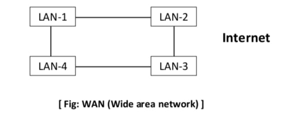
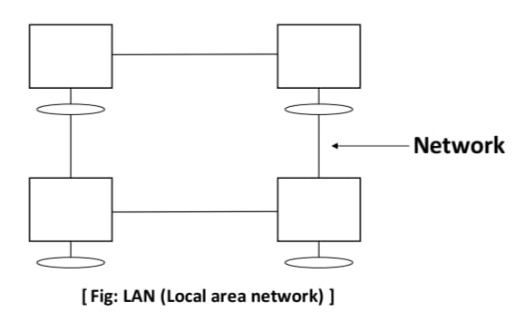
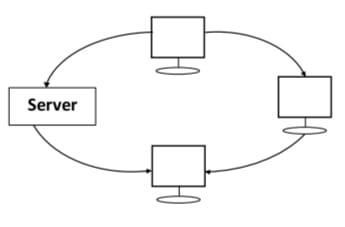

Introduction To Internet
Internet is a network of network that is used to interlinked many different types of computer all over the world
Internet

1: Large interconnected network or, network of network.
2:Internet is a computer based world wide information & provide many services to make our work easier.
3:The word internet can be split into two word, thar is “inter” that means “inside or within” and “net’ which means “ mesh”.
4: It is the network of computer spread all over the world , that allows to share information &
communicate with each other.
History of Internet
1: Introduced by us defense department in 1969.
2:ARPANET (Advanced Research Project Agency Network).
3: Original ARPANET was shut down in 1990.
Advantages of internet
1: Easy communication with people.
2:Publishing documents on the internet to save paper.
3:Greater access to information.
4: Easy to connect anyone on the internet.
5: 6:Entertainment.
7:Banking, Bill & Shopping.
8: Selling & marking money.
Disadvantages of internet
1: Addiction, time waste & causes distraction.
2: Spam & advertising.
3:Pornography & violent images.
4: Hacking, viruses & cheating.
5: Heath issues.
6: Buying things that you don’t
need.
7: Not safe for children.
8:Cyber frauds.
network
What is computer network? Explain types of computer network ?
1: Computer network is method of communication b/w different computers.
2:It is a group of computer, which are connected with each other in order to share information and resources.
Types of computer network:-
1. Local Area Network(LAN):-
Computer network which is dedicated to share information & resources among sevral personal computer is known as local area network.

1: It is covering small area.
2:It is used mostly cables.
Metropolitan area network(MAN):-
1: Computer network that usually spread across a campus or a city is known as metropolitan area network.
2:It is coverting campus or city.
3: It used as mostly wireless.
Wide area network(WAN):-
1: WAN covers, wide, geographic are like state or country known as wide area network.
2: This network is used for country.